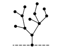
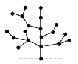
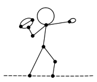
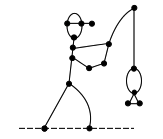
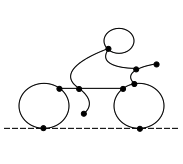
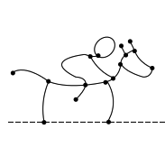

Section 4.6 Exercises
Exercises Exercise
1.
Prove that Nim and Bamboo Stalks are equivalent games by explaining how to turn one game into the other. More specifically, explain why a bamboo stalk of height \(n\) is equivalent to the nim heap \(*n\text{.}\)
2.
Determine whether each of the following Bamboo Stalk positions is an \Npos~or a \Ppos. If it is an \Npos, list all of the winning moves.
3.
Equation (4.2.1) shows that the Sprague-Grundy value of the Lumberjack position in Figure 4.2.1 is
There is a winning move for \(G_1 \oplus G_2 \oplus G_3\) in \(G-1\) and three winning moves for \(G_1 \oplus G_2 \oplus G_3\) in \(G_2\text{.}\) Find all of these winning moves.
4.
Give an example of a Lumberjack position \(G\) that has a follower \(G'\) with \(\g(G') < \g(G)\text{.}\)
5.
Find the Sprague-Grundy value of each of these Lumberjack trees.
This tree:
This other tree:

6.
Show that the following Lumberjack forest is an \Npos. For each of the three trees, find a winning move, or explain why no such move exists.
7.
This exercise guides you through the proof of Lemma \ref{lemma-loop}. Let \(G\) be a multigraph rooted at vertex \(x\) with a loop edge \(e\) incident with vertex \(y\text{.}\) Let \(H\) be the multigraph obtained by replacing this loop by a twig edge \(f\) from \(y\) to a new vertex \(z\text{.}\) You will show that the Green Hackenbush game position \(G \oplus H\) satisfies \(\g(G \oplus H) = 0\text{.}\)
Suppose that Left hacks the loop \(e\) in \(G\text{.}\) What should Right do? How do you know that this results in a \Ppos?
Suppose that Left hacks an edge in \(G\) that disconnects the loop \(e\) from the root of \(G\text{.}\) What should Right do?
Use induction on the number of edges \(m\) in \(G\) to prove that if Left hacks an edge in \(G\) that does not disconnect the loop \(e\) from the root, then Right has a move in \(H\) to create a \Ppos. Your base case is \(m=0\text{,}\) in which \(G\) consists of a single root vertex \(x\) with no edges. (This means that for the base case, we have \(y=x\) since this is the only vertex in \(G\text{.}\))
What if Left makes his first move in \(H\) instead of in \(G\text{?}\)
Explain why \(\g(G \oplus H) = 0\) means that \(\g(G) = \g(H)\text{.}\)
8.
In this problem, we confirm that there are no winning moves in Figure 4.4.1 that hack an edge in either the evergreen \(G_1\) or the snowman \(G_3\)
List the followers of the evergreen \(G_1\text{,}\) and find their Sprague-Grundy values using the Tuft, Loop and Fusion Principles.
List the followers of \(G_3\text{,}\) and find their Sprague-Grundy values using the Tuft, Loop and Fusion Principles.
-
The Sprague-Grundy value of the wintery position of Figure \ref{fig:hack-example} is
\begin{equation*} \g(G) = \g(G_1) \oplus \g(G_2) \oplus \g(G_3) = 2 \oplus 5 \oplus 1 = 6. \end{equation*}Explain why your answers to parts (a) and (b) show that the winning move for \(G\) must involving hacking an edge in the reindeer \(G_2\text{.}\)
9.
Determine the Sprague-Grundy value of each of the following sporty Green Hackenbush pictures.
This quarterback:
This fisher:

10.
Determine the Sprague-Grundy value of each of the following speedy Green Hackenbush pictures.
This biker:
This horse and rider:

11.
Consider the following Green Hackenbush volleyball game.
Find its Sprague-Grundy value.
Find all of the winning moves for Left.
12.
In this problem, you will prove the Parity Principle of Theorem \ref{thm-parity}: the Sprague-Grundy value of any Lumberjack position has the same parity as the total number of edges. The key idea behind this proof is the following simple observation:
Prove that the Parity Principle holds for \(k\)-tufts.
Let \(G\) be a tree, and let \(m\) be the number vertices of degree greater than 2. Use induction on \(m\) to prove that the Parity Principle holds for \(G\text{.}\) You will need to use part (a) during your inductive step.
Use part (b) to prove that if \(H\) is a forest, then the Parity Principle holds.
13.
Find the Sprague-Grundy value of this classic movie scene. Then find all of the winning moves.
14.
Prove that the Parity Principle also holds for Green Hackenbush.
15.
The Tuft Principle (Theorem \ref{thm:tuft}) says that we can replace a tuft consisting of paths \(B_1, B_2, \ldots, B_k\) with a single path of length \(B_1 \oplus B_2 \oplus \cdots B_k\text{.}\) Using the proof of Theorem \ref{thm:tuft} as a guide, prove the following Branch Principle:
Branch Principle: Let \(G\) be a tree rooted at \(x\) and let \(y\) be a leaf of \(G\text{.}\) Let \(H_1\) be tree rooted at \(z\) with \(g(H_1)=\ell\text{,}\) and let \(H_2\) be a bamboo stalk of height \(\ell\text{.}\) Then
\begin{equation*} g([G_y:H_1]) = g([G_y:H_2]). \end{equation*}
16.
Consider the following family of graphs
Calculate the Sprague-Grundy values for the first four trees in this family. Make a conjecture about the Sprague-Grundy value \(g(G_k)\) and then use the Branch Principle to prove that your answer is correct.17.
Consider the following family of graphs
Calculate the Sprague-Grundy values for the first four trees in this family. Make a conjecture about the Sprague-Grundy value \(g(G_k)\) and then use induction and the Branch Principle to prove that your answer is correct.18.
Consider the following family of graphs
Calculate the Sprague-Grundy values for the first eight trees in this family. Make a conjecture about the Sprague-Grundy value \(g(G_k)\) and then use induction and the Branch Principle to prove that your answer is correct.19.
Consider the following family of graphs
Calculate the Sprague-Grundy values for the first eight trees in this family. Make a conjecture about the Sprague-Grundy value \(g(G_k)\) and then use induction and the Branch Principle to prove that your answer is correct.20.
Recall that an even cycle is a cycle with an even number of edges, and an odd cycle is a cycle with an odd number of edges. In Green Hackenbush, show that we can simply our fusion process as follows.
An even cycle can be replaced by a single fused vertex.
An odd cycle can be replaced by a single fused vertex with one leaf attached to it.
Proving these two statements requires that you combine three principles. You must mention them all, in order.